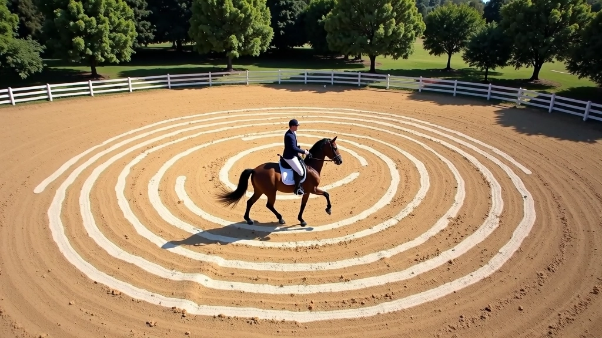
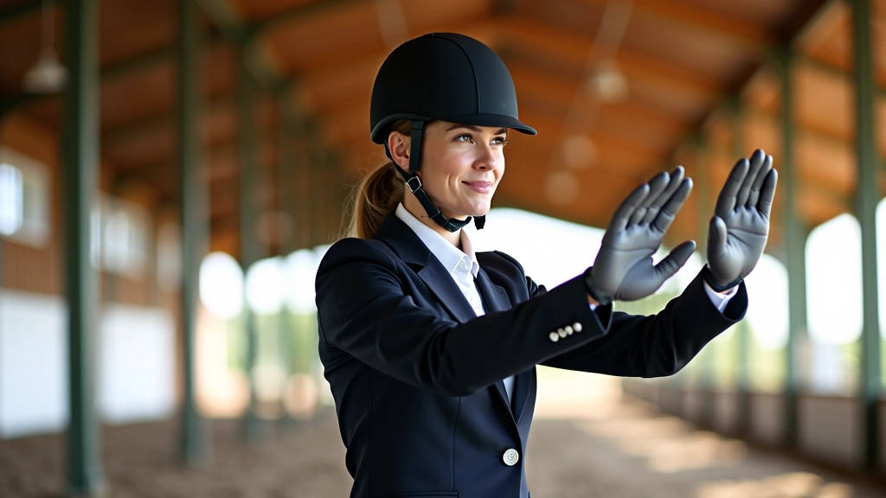
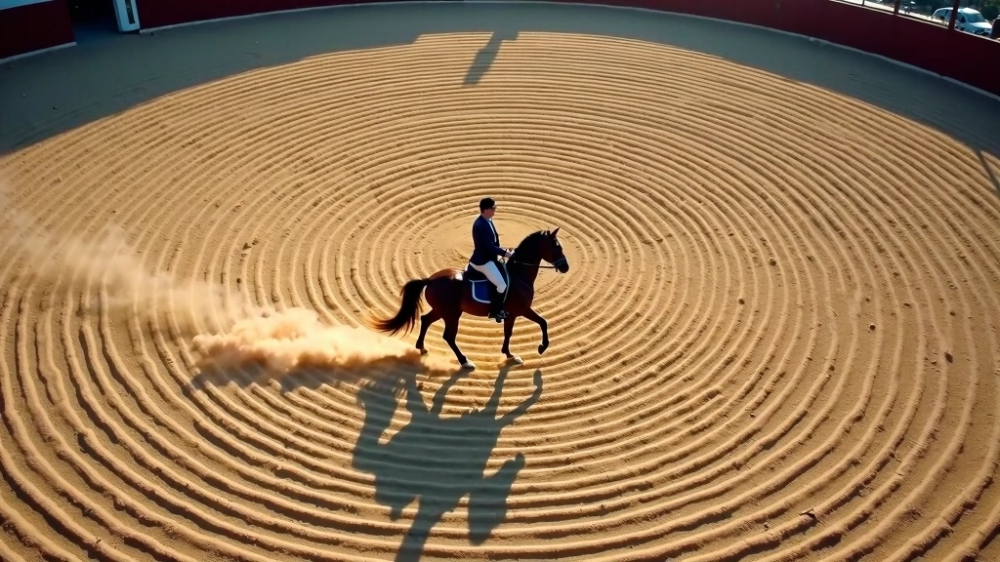
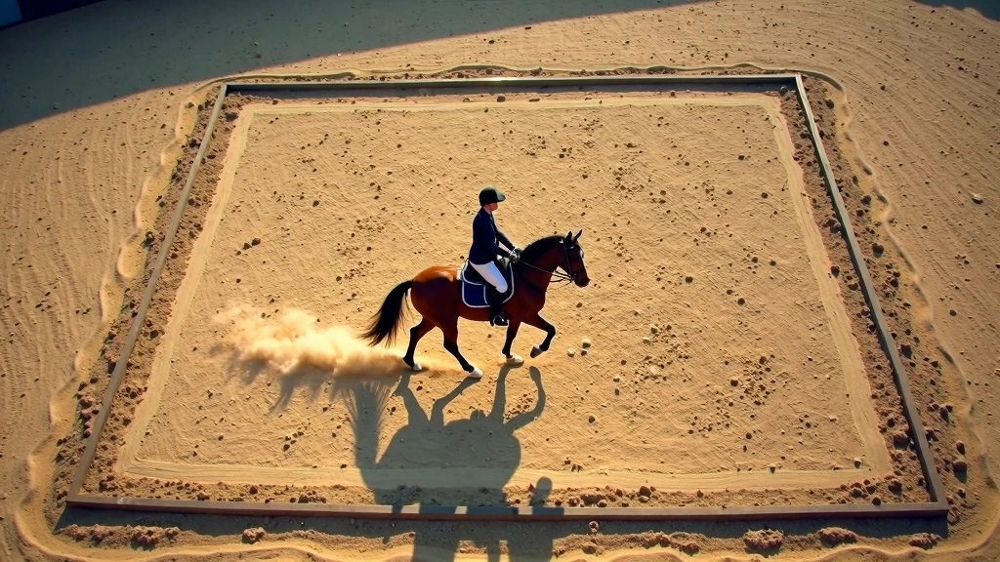
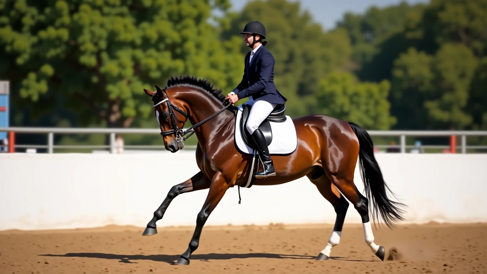
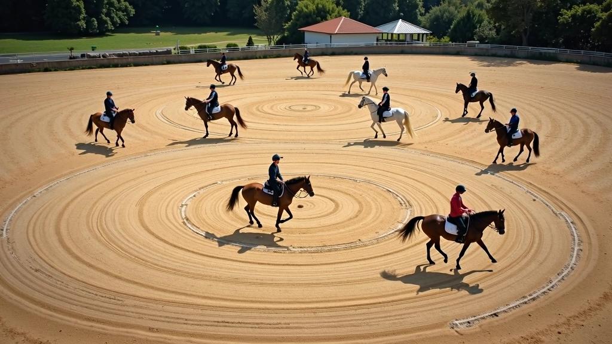
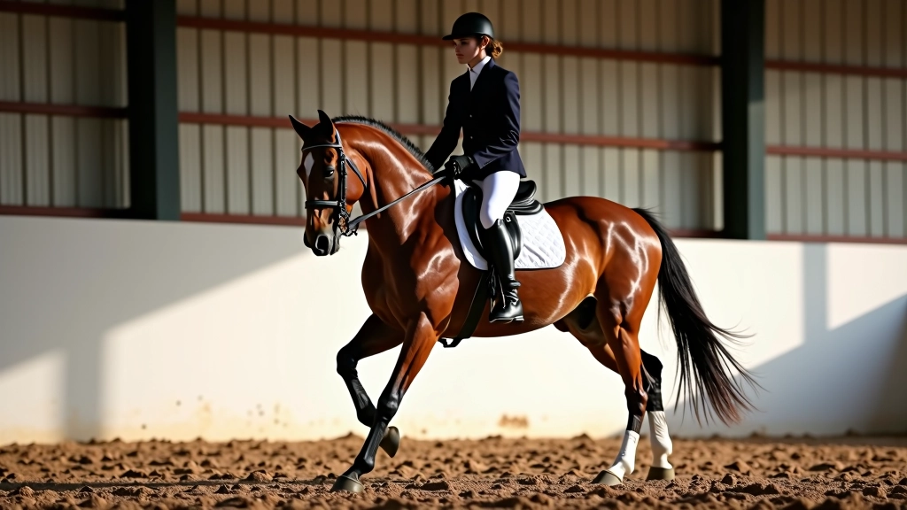
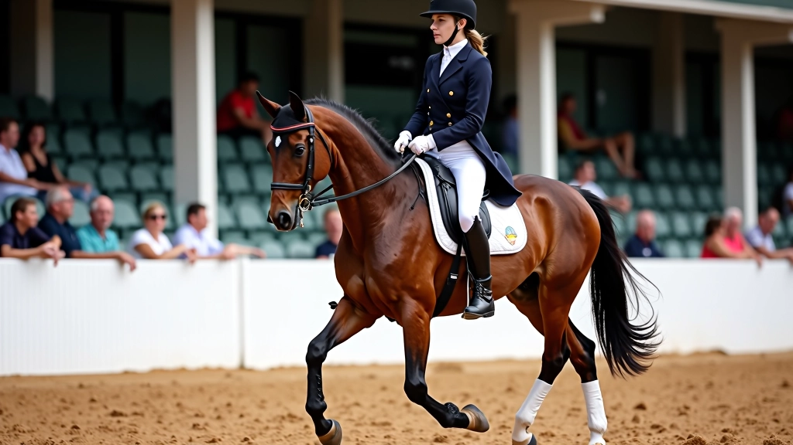

أساسيات الجلسة الصحيحة والتوازن على الحصان
شرح مفصل لكيفية جلوس الفارس بشكل صحيح، موضع الساقين والحوض، والحفاظ على التوازن الدقيق.
استخدام الدوائر والمربعات والخطوط لتطوير مرونة الحصان الجانبية، التحكم الدقيق، وتحسين التعاون بين الفارس والحصان.

الأشكال الهندسية ليست مجرد تمارين جميلة. هي الطريقة الفعالة لتعليم الحصان التحكم الجانبي والمرونة. عندما تركب الحصان في دائرة أو مربع أو خط، فأنت تعمل على أجزاء محددة من جسده — الأرجل الخلفية، الكتفين، الفك.
الشيء هو أن معظم الفرسان يبدأون بهذه التمارين ولكنهم لا يفهمون الهدف الحقيقي. لا تعني الدقة وحسب. إنها عن بناء عضلات معينة وتعليم الحصان الاستجابة لتعديلات صغيرة جداً.


الدوائر هي أبسط شكل وأكثرها أهمية. نبدأ عادة بدائرة بقطر 20 متر. هذا يعطي الحصان مساحة كافية للعمل دون الشعور بالضيق.
عندما تركب الدائرة، ركز على:
معظم الفرسان يركبون الدائرة ولا ينتبهون لما يفعلونه. النقطة الحقيقية هي بناء حنين الحصان الجانبي — أي انحناؤه حول رجلك الداخلية. ستشعر بالفرق بعد 3-4 أسابيع من الممارسة المنتظمة.
بعد إتقان الدوائر، ننتقل إلى المربعات. والمربع أصعب بكثير. لماذا؟ لأنه يتطلب من الحصان تغيير الاتجاه بزاوية 90 درجة عند كل زاوية. هذا يعني أن عضلاته الجانبية تعمل أكثر.
مربع بـ 15 متر في كل ضلع هو الحجم المثالي للبدء. وإليك ما تركز عليه:
الزوايا الحادة: عند الاقتراب من كل زاوية، قلل السرعة قليلاً وزد الحنين. لا تحاول الانعطاف بسرعة — هذا يفسد التقنية.
في الأسبوع الأول، قد تشعر أن الحصان مرتبك. هذا طبيعي. استغرق الأمر مع حصاني حوالي شهر حتى فهم حقاً ما كنت أطلبه. لكن عندما اكتشفه — كان التحسن ملحوظاً في التحكم والاستجابة.

المعلومات الواردة في هذا الدليل مخصصة للأغراض التعليمية والإرشادية. كل حصان مختلف، وكل فارس له احتياجات فريدة. نوصي بشدة بالعمل مع مدرب متخصص قبل محاولة أي من هذه التمارين المتقدمة. السلامة — للفارس والحصان — تأتي دائماً أولاً.

الآن الأشياء تصبح أكثر دقة. الخطوط المستقيمة تبدو بسيطة — مجرد ركوب مستقيماً. لكن الهدف مختلف تماماً.
عندما تركب خطاً مستقيماً، تعمل على الحنين الجانبي بدون تغيير الاتجاه. هذا يعني أن جسم الحصان ينحني قليلاً نحو رجلك الداخلية بينما يتحرك للأمام في خط مستقيم. أنت لا تتجه — أنت فقط تنحني.
المفتاح هو عدم المبالغة. حنين صغير جداً كاف. إذا جعلت الحصان ينحني كثيراً، سيبدأ في التحرك بزاوية بدلاً من الخط المستقيم.
جرب هذا: ركب على طول الجانب الطويل من الحلبة. اطلب حنين صغير — فقط 10-15 درجة. استمر لمدة 30 ثانية ثم استرخ. كرر 3-4 مرات. ستشعر بالفرق في تحكم الحصان بسرعة.
بعد إتقان كل شكل على حدة، يأتي الجزء الممتع — دمجها معاً. يمكنك ركوب دائرة ثم مربع ثم خطوط، كل ذلك في جلسة واحدة. هذا يبني عضلات الحصان بسرعة أكبر ويحسن الاستجابة.
ابدأ بـ 5 دقائق من الدوائر بقطر 20 متر لتدفئة الحصان وإرخاء العضلات.
انتقل إلى مربع بـ 15 متر لمدة 3 دقائق، مع التركيز على الزوايا الحادة.
اركب خطوط مستقيمة بحنين جانبي لمدة دقيقتين على كل جانب.
عد إلى الدائرة الصغيرة (15 متر) لإنهاء الجلسة بتمرين أسهل.
هذه الجلسة تستغرق حوالي 20-25 دقيقة. جرب هذا البرنامج مرتين أسبوعياً وستلاحظ تحسناً كبيراً خلال 6-8 أسابيع.

ابدأ بدوائر بقطر 20 متر لبناء أساس قوي من الحنين والتوازن.
تقليل السرعة عند الزوايا وزيادة الحنين — هذا هو المفتاح.
حنين جانبي صغير بدون تغيير الاتجاه يبني استجابة دقيقة.
جلسة مدمجة مرتين أسبوعياً ستظهر نتائج في 6-8 أسابيع.
الأشكال الهندسية ليست مملة أو تقليدية. إنها الطريقة الفعلية لبناء شراكة حقيقية مع حصانك. كل تمرين له هدف واضح، وكل تحسن يمكنك أن تشعر به. ابدأ اليوم، كن صبوراً، ستفاجأ بالنتائج.

فريق التحرير
كتبه فريق التحرير بفرسان الحلبة، متخصص في توفير إرشادات عملية وموثوقة عن تمارين الفروسية.
شرح مفصل لكيفية جلوس الفارس بشكل صحيح، موضع الساقين والحوض، والحفاظ على التوازن الدقيق.

تمارين عملية لتحسين جودة خطوات الحصان، زيادة الارتفاع والقوة، والوصول إلى حركات متقدمة.

برنامج شامل للفرسان المتقدمين يغطي الحركات المعقدة مثل البيرويت والحركات المزدوجة.